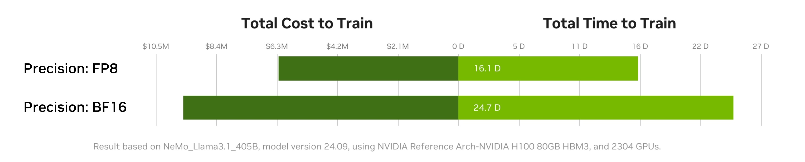

Transformer Engine 概览
Copyright (c) 2022-2025, NVIDIA CORPORATION & AFFILIATES.
See LICENSE for license information.
快速上手 安装指南 用户手册 示例 FP8 收敛性 集成方案 发行说明
最新动态
- [09/2025] 使用 NVFP4 预训练大型语言模型
- [09/2025] Ling 2.0 原生 FP8 混合精度训练已开源
- [09/2025] 借助 NVIDIA NeMo 以 FP8 精度提升训练吞吐
- [08/2025] DeepL 如何以 FP8 打造下一代可训练与推理的 LLM
- [08/2025] NVFP4：兼具 16 位精度与 4 位速度与效率
- [06/2025] 浮点 8：高效低精度 AI 训练入门
- [05/2025] 在 NVIDIA Grace Hopper 上训练 LLM 的高级优化策略
- [03/2025] 稳定且可扩展的 FP8 深度学习训练（Blackwell GTC 2025）
- [03/2025] 借助 NVIDIA DGX Cloud 基准测试衡量与提升 AI 工作负载性能

- [02/2025] 借助 Evo 2 在新尺度理解生命分子的语言
- [02/2025] NVIDIA DGX Cloud 推出开箱即用的基准模板
- [01/2025] 联合 iGenius 与 NVIDIA DGX Cloud 为主权 AI 与受监管行业持续预训练 SOTA LLM
历史动态
更早的里程碑请参阅 NVIDIA 文档归档 与 官方博客。
什么是 Transformer Engine？
Transformer Engine（简称 TE）是面向 NVIDIA GPU 的 Transformer 加速库，支持在 Hopper、Ada 与 Blackwell GPU 上使用 8 位浮点（FP8）精度，以在训练与推理中提供更高性能与更低内存占用。TE 提供针对主流 Transformer 架构高度优化的构建模块，以及类似自动混合精度的 API，可无缝融入各框架的代码。同时还包含与框架无关的 C++ API，便于其他深度学习库集成 FP8 支持。
随着 Transformer 参数规模持续增长，BERT、GPT、T5 等架构在训练与推理阶段对显存与算力的需求也与日俱增。多数深度学习框架默认使用 FP32 训练，但在许多模型中，为获得完整精度并非必须。混合精度训练将单精度（FP32）与更低精度（如 FP16）结合，可在几乎不损失精度的情况下显著提升速度。Hopper GPU 架构引入了 FP8 精度，较 FP16 进一步提升性能且不降低准确性。不过，目前主流框架尚未原生支持 FP8。
TE 通过提供可与主流大语言模型（LLM）库集成的 API 来解决 FP8 支持问题。它既包含可快速构建 Transformer 层的 Python 模块，也提供框架无关的 C++ 库（包含 FP8 所需的结构体与算子）。TE 模块会在内部维护缩放因子等 FP8 训练所需参数，从而大幅简化混合精度训练流程。
亮点
- 提供便捷的 Transformer 层模块，并内置 FP8 支持
- 针对 Transformer 模型的多种优化（如融合算子）
- 支持在 NVIDIA Hopper、Ada、Blackwell GPU 上使用 FP8
- 覆盖 NVIDIA Ampere 及更新架构上的各种精度优化（FP16、BF16 等）
示例
PyTorch
import torch
import transformer_engine.pytorch as te
from transformer_engine.common import recipe
# 设置维度
in_features = 768
out_features = 3072
hidden_size = 2048
# 初始化模型与输入
model = te.Linear(in_features, out_features, bias=True)
inp = torch.randn(hidden_size, in_features, device="cuda")
# 创建 FP8 配方（所有参数均为可选）
fp8_recipe = recipe.DelayedScaling(margin=0, fp8_format=recipe.Format.E4M3)
# 在前向传播中启用自动混合精度
with te.autocast(enabled=True, recipe=fp8_recipe):
out = model(inp)
loss = out.sum()
loss.backward()
JAX / Flax
import flax
import jax
import jax.numpy as jnp
import transformer_engine.jax as te
import transformer_engine.jax.flax as te_flax
from transformer_engine.common import recipe
BATCH = 32
SEQLEN = 128
HIDDEN = 1024
# 初始化随机数与输入
rng = jax.random.PRNGKey(0)
init_rng, data_rng = jax.random.split(rng)
inp = jax.random.normal(data_rng, [BATCH, SEQLEN, HIDDEN], jnp.float32)
# 创建 FP8 配方（所有参数均为可选）
fp8_recipe = recipe.DelayedScaling(margin=0, fp8_format=recipe.Format.HYBRID)
# 在前向传播中启用自动混合精度
with te.autocast(enabled=True, recipe=fp8_recipe):
model = te_flax.DenseGeneral(features=HIDDEN)
def loss_fn(params, other_vars, inp):
out = model.apply({'params': params, **other_vars}, inp)
return jnp.mean(out)
# 初始化模型
variables = model.init(init_rng, inp)
other_variables, params = flax.core.pop(variables, 'params')
# 构建前向与反向函数
fwd_bwd_fn = jax.value_and_grad(loss_fn, argnums=(0, 1))
for _ in range(10):
loss, (param_grads, other_grads) = fwd_bwd_fn(params, other_variables, inp)
完整教程请参阅 快速上手 Notebook。
安装指南
系统要求
-
硬件： Blackwell、Hopper、Grace Hopper/Blackwell、Ada、Ampere
-
操作系统： Linux（官方支持）、WSL2（有限支持）
-
软件：
-
CUDA：12.1+（Hopper/Ada/Ampere），12.8+（Blackwell），需配套兼容的 NVIDIA 驱动
- cuDNN：9.3+
- 编译器：支持 C++17 的 GCC 9+ 或 Clang 10+
-
Python：推荐 3.12
-
源码编译额外需求： CMake 3.18+、Ninja、Git 2.17+、pybind11 2.6.0+
-
注意事项： FP8 功能需要计算能力 8.9+（Ada/Hopper/Blackwell）
安装方式
Docker（推荐）
最快的入门方式是使用 NVIDIA GPU Cloud (NGC) Catalog 中的 Docker 映像。
示例：交互式拉起 NGC PyTorch 容器
示例：交互式拉起 NGC JAX 容器
其中 25.08 表示 2025 年 8 月发布的容器版本。
使用 NGC 容器的优势：
- 预装所有依赖并经过优化配置
- NGC PyTorch 23.08+ 容器内置 FlashAttention-2
pip 安装
pip 安装前置条件：
- 兼容的 C++ 编译器
- 安装了 cuDNN 与 NVCC 的 CUDA Toolkit
安装最新稳定版：
# 集成 PyTorch
pip install --no-build-isolation transformer_engine[pytorch]
# 集成 JAX
pip install --no-build-isolation transformer_engine[jax]
# 同时支持 PyTorch 与 JAX
pip install --no-build-isolation transformer_engine[pytorch,jax]
也可直接从 GitHub 仓库安装：
从 GitHub 安装时，可通过环境变量显式指定要构建的框架：
NVTE_FRAMEWORK=pytorch,jax pip install --no-build-isolation git+https://github.com/NVIDIA/TransformerEngine.git@stable
conda 安装
使用 conda-forge 获取最新稳定版：
源码安装
环境变量
安装前可设置以下环境变量自定义构建流程：
- CUDA_PATH：CUDA 安装路径
- CUDNN_PATH：cuDNN 安装路径
- CXX：C++ 编译器路径
- NVTE_FRAMEWORK：构建框架列表，逗号分隔（如
pytorch,jax） - MAX_JOBS：限制并行构建任务数量（默认值依系统而定）
- NVTE_BUILD_THREADS_PER_JOB：控制每个任务使用的线程数
编译 FlashAttention
Transformer Engine 在 PyTorch 中支持 FlashAttention-2 与 FlashAttention-3，以获得更高性能。自 v1.11 起新增了 FlashAttention-3，当环境同时存在两个版本时会优先使用 FlashAttention-3。
可通过以下环境变量检查当前使用的 FlashAttention 版本：
已知问题：FlashAttention-2 编译过程占用内存较大（参见 相关 issue），可能导致安装 Transformer Engine 时内存不足。可尝试设置 MAX_JOBS=1 来规避。
故障排查
常见问题与解决方案：
-
ABI 兼容性问题
-
现象： 导入 transformer_engine 时出现
ImportError，提示未定义符号 - 解决方法： 确认 PyTorch 与 Transformer Engine 使用相同的 C++ ABI 设置。必要时从源码重新编译 PyTorch。
-
补充说明： 若 PyTorch 的 C++ ABI 与系统默认不一致（在容器外使用 pip 安装的 PyTorch 时常见），则容易出现此类错误。
-
缺少头文件或库
-
现象： CMake 报错找不到头文件（如
cudnn.h、cublas_v2.h、filesystem等） - 解决方法： 安装缺失的开发包或通过环境变量指定路径：
- 若 CMake 无法找到 C++ 编译器，可设置
CXX环境变量。 -
安装前请确认上述路径已正确配置。
-
构建资源问题
-
现象： 编译卡住、系统假死或内存不足
- 解决方法： 限制并行度：
-
需要详细的构建日志
-
方法：
破坏性更新
v1.7：PyTorch 的 padding mask 定义变更
为统一 Transformer Engine 中三个框架的注意力掩码定义，我们将 PyTorch 实现中的 padding mask 含义改为：True 表示屏蔽对应位置，False 表示参与注意力计算。自 v1.7 起，所有类型的注意力掩码均遵循相同定义。
# v1.6 及之前
[True, True, True, False, False,
True, True, False, False, False,
True, True, True, True, False]
# v1.7 及之后
[False, False, False, True, True,
False, False, True, True, True,
False, False, False, False, True]
FP8 收敛性
我们在多种模型架构与配置上对 FP8 进行了广泛验证，训练损失曲线与 BF16 几乎没有差异。FP8 同样已在下游 LLM 任务（如 LAMBADA、WikiText）上验证其精度。以下列举部分跨框架验证过收敛性的模型。
| 模型 | 框架 | 参考链接 |
|---|---|---|
| T5-770M | JAX / T5x | https://github.com/NVIDIA/JAX-Toolbox/tree/main/rosetta/rosetta/projects/t5x#convergence-and-performance |
| MPT-1.3B | Mosaic Composer | https://www.mosaicml.com/blog/coreweave-nvidia-h100-part-1 |
| GPT-5B | JAX / Paxml | https://github.com/NVIDIA/JAX-Toolbox/tree/main/rosetta/rosetta/projects/pax#h100-results |
| GPT-5B | NVIDIA NeMo Framework | 可按需提供 |
| Llama2-7B | Alibaba Pai | https://mp.weixin.qq.com/s/NQT0uKXLbXyh5031zBdeBQ |
| T5-11B | JAX / T5x | 可按需提供 |
| MPT-13B | Mosaic Composer | https://www.databricks.com/blog/turbocharged-training-optimizing-databricks-mosaic-ai-stack-fp8 |
| GPT-22B | NVIDIA NeMo Framework | 可按需提供 |
| Llama2-70B | Alibaba Pai | https://mp.weixin.qq.com/s/NQT0uKXLbXyh5031zBdeBQ |
| GPT-175B | JAX / Paxml | https://github.com/NVIDIA/JAX-Toolbox/tree/main/rosetta/rosetta/projects/pax#h100-results |
集成方案
Transformer Engine 已集成至多款热门 LLM 框架：
- DeepSpeed
- Hugging Face Accelerate
- Lightning
- MosaicML Composer
- NVIDIA JAX Toolbox
- NVIDIA Megatron-LM
- NVIDIA NeMo Framework
- Amazon SageMaker Model Parallel Library
- Levanter
- GPT-NeoX
- Hugging Face Nanotron —— 即将上线！
- Colossal-AI —— 即将上线！
- PeriFlow —— 即将上线！
参与贡献
我们欢迎社区共同完善 Transformer Engine！如需提交贡献与 Pull Request，请遵循 贡献指南。